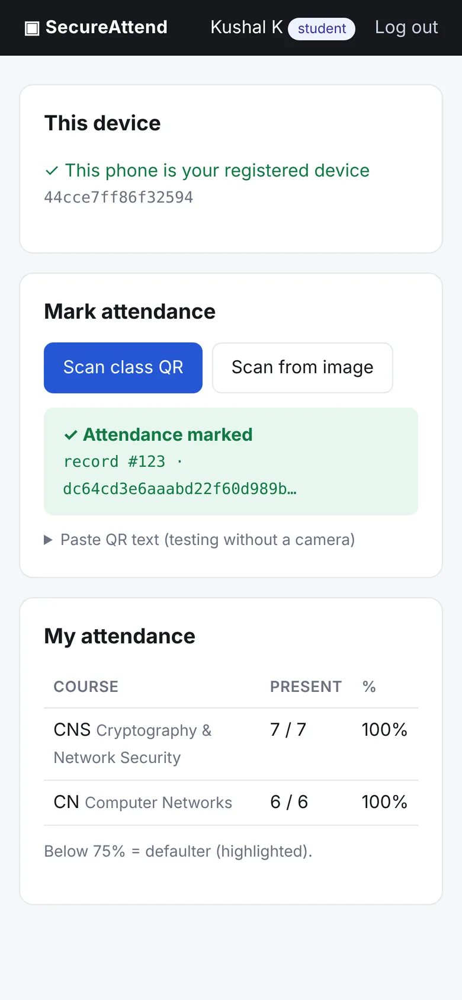
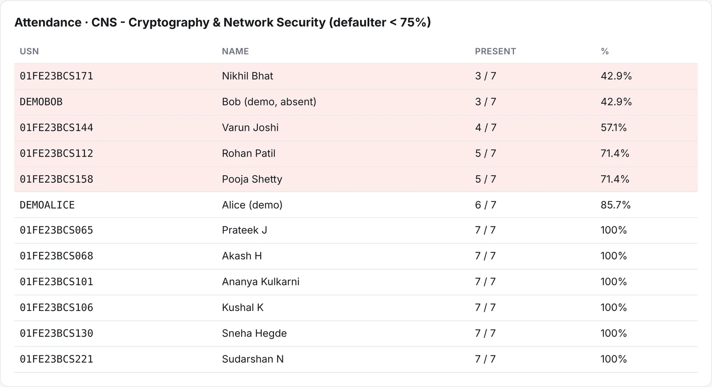

- 6.1 Implementation: modules and responsibilities
- 6.2 User interface
- 6.3 Testing and validation
- 6.4 Running the system
6.1 Implementation: Modules and Responsibilities
| Module | Files | Responsibility |
|---|---|---|
| Cryptography core | app/crypto_core.py | HKDF, QR token mint / verify, ECDSA verify (raw→DER), hash chain, Ed25519 sign / verify |
| Data layer | app/db.py | Schema, chain append with locking, full chain verification with report anchors |
| Security | app/security.py | Argon2id, session tokens, lockout, RBAC dependency, subnet check |
| Web application | app/main.py | Pages, JSON API, scan pipeline, reports, defaulters, security headers |
| Configuration | app/config.py | Master key bootstrap, key hierarchy, settings |
| Frontend | templates/ + static/js/ | Faculty QR screen, student scanner, WebCrypto device key (device.js), admin panel, verify page |
| Tooling | scripts/ | Demo data, TLS certificate, attack suite, offline report verifier |
| Tests | tests/test_system.py | Unit tests for crypto and end-to-end API tests |
6.2 User Interface



6.3 Testing and Validation
| Area | Details | Result |
|---|---|---|
| Crypto unit tests | Token round-trip and expiry, tampered window / session rejected, HKDF key independence, report signature valid / invalid after edit | Pass |
| End-to-end API tests | Honest scan, nonce replay, double scan, proxy device, device rebind, RBAC, close + signed report, chain tamper detect and restore, lockout | Pass |
| Test suite total | pytest -q | 7 / 7 |
| Live attack suite | python -m scripts.attacks against the running HTTPS server | 13 / 13 |
| Live UI checks | Laptop (faculty, admin) + phones over hotspot: device registration, camera scan, live rejection list, signed report download and verification | Verified |
6.4 Running the System
# set up and start (creates venv, demo data, keys, TLS certificate) git clone https://github.com/kushalkou/cns-qr-attendance cd cns-qr-attendance && ./run.sh # tests and live attack demo (second terminal) source .venv/bin/activate pytest -q # 7 passed python -m scripts.attacks --fast # 13/13 behaved as expected